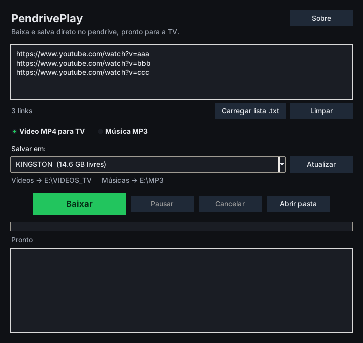

PendrivePlay
Guia de instalação e uso

Versão 1.0.0 · Windows 10 e 11 (64 bits)
1. O que é o PendrivePlay
O PendrivePlay baixa vídeos e músicas a partir de links e salva os arquivos
direto no pendrive, já no formato que TVs antigas, Smart TVs e TV Box conseguem tocar.
- Vídeo MP4 para TV: 1280x720 (HD), H.264, áudio AAC. Vai para a pasta
VIDEOS_TV.
- Música MP3: 192 kbps. Vai para a pasta
MP3.
- Vários links de uma vez, com Pausar, Continuar e Cancelar.
Use com responsabilidade. Baixe apenas conteúdo que você tem direito de baixar
(vídeos seus, conteúdo em domínio público, com licença livre ou com autorização do autor).
Os termos de uso de alguns sites, incluindo o YouTube, não permitem baixar conteúdo fora
do aplicativo deles. Respeitar esses termos e as leis de direitos autorais é responsabilidade de quem usa.
2. O que você precisa
- Computador com Windows 10 ou 11, 64 bits.
- Cerca de 400 MB livres no computador.
- Internet.
- Um pendrive formatado em FAT32 ou exFAT (quase todo pendrive já vem assim).
Não é preciso instalar Python, ffmpeg nem nenhum outro programa: vai tudo no instalador.
3. Instalar
- Na sua biblioteca do Gumroad, baixe o arquivo
.zip do PendrivePlay.
- Clique com o botão direito no
.zip e escolha Extrair tudo.
- Dê dois cliques em
PendrivePlay_Instalador_1.0.0.exe.
- Se aparecer a tela azul "O Windows protegeu o computador", clique em
Mais informações e depois em Executar assim mesmo.
Isso acontece porque o instalador não tem assinatura digital paga.
Não é um vírus.
- Leia a licença e o aviso de uso, marque Eu aceito o acordo e clique em Avançar.
- Se quiser, marque Criar um ícone na Área de Trabalho. Clique em Instalar e depois em Concluir.
O instalador não pede senha de administrador. O programa fica em
%LOCALAPPDATA%\Programs\PendrivePlay e aparece no Menu Iniciar.
4. Baixar para o pendrive
Passo 1: conecte o pendrive e abra o programa
O pendrive aparece sozinho em Salvar em, com o nome e o espaço livre.
Se ele não aparecer, clique em Atualizar.
Tela inicial, com o pendrive detectado.
Passo 2: cole os links
Cole um link por linha. O contador abaixo da caixa mostra quantos links foram
reconhecidos. Links repetidos são ignorados. Também dá para usar Carregar lista .txt
para trazer links de um arquivo de texto.
Escolha Vídeo MP4 para TV ou Música MP3 e clique em Baixar.
Três links colados, prontos para baixar.
Passo 3: acompanhe
Os links são baixados um de cada vez. A barra mostra o progresso total e o quadro de
baixo mostra cada etapa.
Baixando o segundo de três links.
- Pausar / Continuar: para o download na hora e continua de onde parou. Se a pausa
acontecer durante a conversão, ela vale quando o arquivo atual terminar.
- Cancelar: para tudo. O que já terminou fica no pendrive e os links que faltaram
voltam para a caixa.
- Se um link der erro, o programa continua com os outros e, no final, deixa na caixa só
os links que falharam.
Passo 4: pronto
Três vídeos salvos em E:\VIDEOS_TV.
Antes de tirar o pendrive, clique no ícone do pendrive perto do relógio do Windows e escolha
Ejetar. Tirar sem ejetar pode corromper os arquivos.
5. Assistir na TV
- Conecte o pendrive na entrada USB da TV ou da TV Box.
- Abra o aplicativo de mídia da TV (o nome muda: "USB", "Mídia", "Media Player", "Fotos e vídeos").
- Entre na pasta
VIDEOS_TV (vídeos) ou MP3 (músicas).
E:\
├── VIDEOS_TV\ vídeos MP4
└── MP3\ músicas
O formato usado (HD 720p, H.264 Baseline) é o mais aceito por TVs, inclusive modelos antigos.
6. Problemas comuns
| Problema | O que fazer |
|---|
| O pendrive não aparece | Clique em Atualizar. Alguns HDs externos não são reconhecidos como pendrive: use Escolher outra pasta... na lista "Salvar em". |
| Um link dá erro | Confira se o vídeo abre no navegador. Vídeos privados, removidos ou com restrição de idade não podem ser baixados. O motivo aparece no quadro de mensagens. |
| Nada baixa, nenhum link funciona | Os sites mudam com frequência e o programa precisa de atualização. Veja se há uma versão nova na sua biblioteca do Gumroad. |
| O antivírus bloqueou o programa | Programas feitos em Python e sem assinatura paga às vezes são marcados por engano. O código é aberto em github.com/Yuric9/PendrivePlay. Se confiar, libere o programa no antivírus. |
| A TV não mostra os vídeos | Confira se os arquivos estão na pasta VIDEOS_TV. Algumas TVs só leem pendrives em FAT32. |
| A pausa não para na hora | Durante a conversão, a pausa espera o arquivo atual terminar. Isso é normal. |
Autoteste
Para conferir se a instalação está completa, abra o Prompt de Comando e rode:
"%LOCALAPPDATA%\Programs\PendrivePlay\PendrivePlay.exe" --autoteste "%USERPROFILE%\Desktop\autoteste.txt"
Um arquivo autoteste.txt aparece na Área de Trabalho. Se terminar com
RESULTADO: TUDO CERTO, o programa está instalado corretamente.
7. Desinstalar
Configurações do Windows → Aplicativos → PendrivePlay → Desinstalar.
Os vídeos e músicas no pendrive não são apagados.
8. Suporte e licenças
- Dúvidas e problemas: mande uma mensagem pelo Gumroad ou abra uma Issue em
github.com/Yuric9/PendrivePlay/issues. Se possível, envie o arquivo do autoteste.
- O PendrivePlay é software livre (licença MIT). Ele inclui o FFmpeg (GPLv3) e o yt-dlp.
As licenças completas e o endereço do código-fonte ficam no botão Sobre do programa
e na pasta
licencas da instalação.